RESEARCH COMPANION
Analysis & methods
All twelve figures with their interpretations, accessible tables, downloads and methods. The data film has two content routes: Core presents 5 essential figures (01, 03, 11, 12, 06); Showcase presents all 12. Each figure section links back to its reading view in the film.
THE QUESTION
What do near-perfect scores leave out?
In the participation_mode=0 records, full-score counts are HW1: 37/39; HW2: 33/38; HW3: 37/39; HW4: 33/35.
The official grading interpretation of this field still needs confirmation. These records motivate a process-focused analysis.
The current homework snapshot retains 2,807 submissions from 39 students, including 305 partial-credit submissions. It covers 4 homeworks and 31 problem slots.
HW1–HW4 · 30 Sep 2026 Beijing snapshot. Midterm and Course Pulse figures retain their separate, pre-exam cohorts. HW4 occurred after the exam and is excluded from those associations.
TIMING / VISIBLE CELLS
When does a burst reflect broad participation?
The peak day is 2026-08-29: 233 submissions from 14 students. The busiest publicly visible four-hour cell is 2026-08-29, 12:00–16:00 Beijing time: 153 submissions from 12 contributors (12.75 per active contributor).
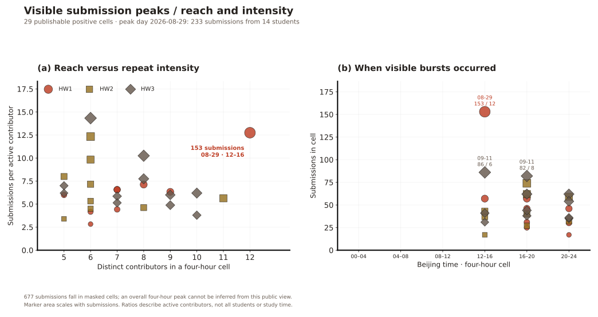


Accessible data table
| Date | Hours (Beijing) | Status | Submissions | Distinct contributors |
|---|---|---|---|---|
| 2026-08-26 | 00:00–04:00 | inactive | — | — |
| 2026-08-26 | 04:00–08:00 | inactive | — | — |
| 2026-08-26 | 08:00–12:00 | inactive | — | — |
| 2026-08-26 | 12:00–16:00 | visible | 0 | 0 |
| 2026-08-26 | 16:00–20:00 | visible | 0 | 0 |
| 2026-08-26 | 20:00–24:00 | visible | 0 | 0 |
| 2026-08-27 | 00:00–04:00 | visible | 0 | 0 |
| 2026-08-27 | 04:00–08:00 | visible | 0 | 0 |
| 2026-08-27 | 08:00–12:00 | visible | 0 | 0 |
| 2026-08-27 | 12:00–16:00 | suppressed | — | — |
| 2026-08-27 | 16:00–20:00 | suppressed | — | — |
| 2026-08-27 | 20:00–24:00 | suppressed | — | — |
| 2026-08-28 | 00:00–04:00 | visible | 0 | 0 |
| 2026-08-28 | 04:00–08:00 | visible | 0 | 0 |
| 2026-08-28 | 08:00–12:00 | suppressed | — | — |
| 2026-08-28 | 12:00–16:00 | visible | 57 | 9 |
| 2026-08-28 | 16:00–20:00 | visible | 25 | 6 |
| 2026-08-28 | 20:00–24:00 | suppressed | — | — |
| 2026-08-29 | 00:00–04:00 | suppressed | — | — |
| 2026-08-29 | 04:00–08:00 | visible | 0 | 0 |
| 2026-08-29 | 08:00–12:00 | suppressed | — | — |
| 2026-08-29 | 12:00–16:00 | visible | 153 | 12 |
| 2026-08-29 | 16:00–20:00 | visible | 57 | 8 |
| 2026-08-29 | 20:00–24:00 | suppressed | — | — |
| 2026-08-30 | 00:00–04:00 | suppressed | — | — |
| 2026-08-30 | 04:00–08:00 | visible | 0 | 0 |
| 2026-08-30 | 08:00–12:00 | visible | 0 | 0 |
| 2026-08-30 | 12:00–16:00 | suppressed | — | — |
| 2026-08-30 | 16:00–20:00 | visible | 46 | 7 |
| 2026-08-30 | 20:00–24:00 | visible | 17 | 6 |
| 2026-08-31 | 00:00–04:00 | suppressed | — | — |
| 2026-08-31 | 04:00–08:00 | suppressed | — | — |
| 2026-08-31 | 08:00–12:00 | suppressed | — | — |
| 2026-08-31 | 12:00–16:00 | suppressed | — | — |
| 2026-08-31 | 16:00–20:00 | visible | 0 | 0 |
| 2026-08-31 | 20:00–24:00 | visible | 30 | 5 |
| 2026-09-01 | 00:00–04:00 | suppressed | — | — |
| 2026-09-01 | 04:00–08:00 | visible | 0 | 0 |
| 2026-09-01 | 08:00–12:00 | suppressed | — | — |
| 2026-09-01 | 12:00–16:00 | suppressed | — | — |
| 2026-09-01 | 16:00–20:00 | visible | 31 | 7 |
| 2026-09-01 | 20:00–24:00 | visible | 46 | 7 |
| 2026-09-02 | 00:00–04:00 | inactive | — | — |
| 2026-09-02 | 04:00–08:00 | inactive | — | — |
| 2026-09-02 | 08:00–12:00 | inactive | — | — |
| 2026-09-02 | 12:00–16:00 | inactive | — | — |
| 2026-09-02 | 16:00–20:00 | inactive | — | — |
| 2026-09-02 | 20:00–24:00 | inactive | — | — |
| 2026-09-03 | 00:00–04:00 | inactive | — | — |
| 2026-09-03 | 04:00–08:00 | inactive | — | — |
| 2026-09-03 | 08:00–12:00 | inactive | — | — |
| 2026-09-03 | 12:00–16:00 | visible | 17 | 5 |
| 2026-09-03 | 16:00–20:00 | visible | 27 | 6 |
| 2026-09-03 | 20:00–24:00 | suppressed | — | — |
| 2026-09-04 | 00:00–04:00 | visible | 0 | 0 |
| 2026-09-04 | 04:00–08:00 | suppressed | — | — |
| 2026-09-04 | 08:00–12:00 | suppressed | — | — |
| 2026-09-04 | 12:00–16:00 | visible | 37 | 8 |
| 2026-09-04 | 16:00–20:00 | visible | 62 | 11 |
| 2026-09-04 | 20:00–24:00 | visible | 32 | 6 |
| 2026-09-05 | 00:00–04:00 | suppressed | — | — |
| 2026-09-05 | 04:00–08:00 | visible | 0 | 0 |
| 2026-09-05 | 08:00–12:00 | suppressed | — | — |
| 2026-09-05 | 12:00–16:00 | suppressed | — | — |
| 2026-09-05 | 16:00–20:00 | visible | 74 | 6 |
| 2026-09-05 | 20:00–24:00 | suppressed | — | — |
| 2026-09-06 | 00:00–04:00 | suppressed | — | — |
| 2026-09-06 | 04:00–08:00 | visible | 0 | 0 |
| 2026-09-06 | 08:00–12:00 | suppressed | — | — |
| 2026-09-06 | 12:00–16:00 | suppressed | — | — |
| 2026-09-06 | 16:00–20:00 | suppressed | — | — |
| 2026-09-06 | 20:00–24:00 | suppressed | — | — |
| 2026-09-07 | 00:00–04:00 | suppressed | — | — |
| 2026-09-07 | 04:00–08:00 | visible | 0 | 0 |
| 2026-09-07 | 08:00–12:00 | suppressed | — | — |
| 2026-09-07 | 12:00–16:00 | visible | 43 | 6 |
| 2026-09-07 | 16:00–20:00 | suppressed | — | — |
| 2026-09-07 | 20:00–24:00 | suppressed | — | — |
| 2026-09-08 | 00:00–04:00 | visible | 0 | 0 |
| 2026-09-08 | 04:00–08:00 | suppressed | — | — |
| 2026-09-08 | 08:00–12:00 | suppressed | — | — |
| 2026-09-08 | 12:00–16:00 | suppressed | — | — |
| 2026-09-08 | 16:00–20:00 | visible | 40 | 5 |
| 2026-09-08 | 20:00–24:00 | visible | 59 | 6 |
| 2026-09-09 | 00:00–04:00 | inactive | — | — |
| 2026-09-09 | 04:00–08:00 | inactive | — | — |
| 2026-09-09 | 08:00–12:00 | inactive | — | — |
| 2026-09-09 | 12:00–16:00 | inactive | — | — |
| 2026-09-09 | 16:00–20:00 | inactive | — | — |
| 2026-09-09 | 20:00–24:00 | inactive | — | — |
| 2026-09-10 | 00:00–04:00 | inactive | — | — |
| 2026-09-10 | 04:00–08:00 | inactive | — | — |
| 2026-09-10 | 08:00–12:00 | inactive | — | — |
| 2026-09-10 | 12:00–16:00 | inactive | — | — |
| 2026-09-10 | 16:00–20:00 | inactive | — | — |
| 2026-09-10 | 20:00–24:00 | inactive | — | — |
| 2026-09-11 | 00:00–04:00 | inactive | — | — |
| 2026-09-11 | 04:00–08:00 | inactive | — | — |
| 2026-09-11 | 08:00–12:00 | suppressed | — | — |
| 2026-09-11 | 12:00–16:00 | visible | 86 | 6 |
| 2026-09-11 | 16:00–20:00 | visible | 82 | 8 |
| 2026-09-11 | 20:00–24:00 | visible | 35 | 5 |
| 2026-09-12 | 00:00–04:00 | suppressed | — | — |
| 2026-09-12 | 04:00–08:00 | visible | 0 | 0 |
| 2026-09-12 | 08:00–12:00 | suppressed | — | — |
| 2026-09-12 | 12:00–16:00 | visible | 41 | 7 |
| 2026-09-12 | 16:00–20:00 | visible | 38 | 10 |
| 2026-09-12 | 20:00–24:00 | visible | 36 | 7 |
| 2026-09-13 | 00:00–04:00 | suppressed | — | — |
| 2026-09-13 | 04:00–08:00 | suppressed | — | — |
| 2026-09-13 | 08:00–12:00 | suppressed | — | — |
| 2026-09-13 | 12:00–16:00 | suppressed | — | — |
| 2026-09-13 | 16:00–20:00 | visible | 62 | 8 |
| 2026-09-13 | 20:00–24:00 | suppressed | — | — |
| 2026-09-14 | 00:00–04:00 | suppressed | — | — |
| 2026-09-14 | 04:00–08:00 | suppressed | — | — |
| 2026-09-14 | 08:00–12:00 | suppressed | — | — |
| 2026-09-14 | 12:00–16:00 | visible | 31 | 5 |
| 2026-09-14 | 16:00–20:00 | suppressed | — | — |
| 2026-09-14 | 20:00–24:00 | visible | 62 | 10 |
| 2026-09-15 | 00:00–04:00 | suppressed | — | — |
| 2026-09-15 | 04:00–08:00 | visible | 0 | 0 |
| 2026-09-15 | 08:00–12:00 | suppressed | — | — |
| 2026-09-15 | 12:00–16:00 | suppressed | — | — |
| 2026-09-15 | 16:00–20:00 | visible | 44 | 9 |
| 2026-09-15 | 20:00–24:00 | visible | 54 | 9 |
| 2026-09-16 | 00:00–04:00 | inactive | — | — |
| 2026-09-16 | 04:00–08:00 | inactive | — | — |
| 2026-09-16 | 08:00–12:00 | inactive | — | — |
| 2026-09-16 | 12:00–16:00 | inactive | — | — |
| 2026-09-16 | 16:00–20:00 | inactive | — | — |
| 2026-09-16 | 20:00–24:00 | inactive | — | — |
| 2026-09-17 | 00:00–04:00 | inactive | — | — |
| 2026-09-17 | 04:00–08:00 | inactive | — | — |
| 2026-09-17 | 08:00–12:00 | inactive | — | — |
| 2026-09-17 | 12:00–16:00 | inactive | — | — |
| 2026-09-17 | 16:00–20:00 | inactive | — | — |
| 2026-09-17 | 20:00–24:00 | inactive | — | — |
| 2026-09-18 | 00:00–04:00 | inactive | — | — |
| 2026-09-18 | 04:00–08:00 | inactive | — | — |
| 2026-09-18 | 08:00–12:00 | inactive | — | — |
| 2026-09-18 | 12:00–16:00 | inactive | — | — |
| 2026-09-18 | 16:00–20:00 | inactive | — | — |
| 2026-09-18 | 20:00–24:00 | inactive | — | — |
| 2026-09-19 | 00:00–04:00 | inactive | — | — |
| 2026-09-19 | 04:00–08:00 | inactive | — | — |
| 2026-09-19 | 08:00–12:00 | inactive | — | — |
| 2026-09-19 | 12:00–16:00 | inactive | — | — |
| 2026-09-19 | 16:00–20:00 | inactive | — | — |
| 2026-09-19 | 20:00–24:00 | inactive | — | — |
| 2026-09-20 | 00:00–04:00 | inactive | — | — |
| 2026-09-20 | 04:00–08:00 | inactive | — | — |
| 2026-09-20 | 08:00–12:00 | inactive | — | — |
| 2026-09-20 | 12:00–16:00 | inactive | — | — |
| 2026-09-20 | 16:00–20:00 | inactive | — | — |
| 2026-09-20 | 20:00–24:00 | inactive | — | — |
| 2026-09-21 | 00:00–04:00 | inactive | — | — |
| 2026-09-21 | 04:00–08:00 | inactive | — | — |
| 2026-09-21 | 08:00–12:00 | inactive | — | — |
| 2026-09-21 | 12:00–16:00 | inactive | — | — |
| 2026-09-21 | 16:00–20:00 | inactive | — | — |
| 2026-09-21 | 20:00–24:00 | inactive | — | — |
| 2026-09-22 | 00:00–04:00 | inactive | — | — |
| 2026-09-22 | 04:00–08:00 | inactive | — | — |
| 2026-09-22 | 08:00–12:00 | inactive | — | — |
| 2026-09-22 | 12:00–16:00 | inactive | — | — |
| 2026-09-22 | 16:00–20:00 | inactive | — | — |
| 2026-09-22 | 20:00–24:00 | inactive | — | — |
| 2026-09-23 | 00:00–04:00 | inactive | — | — |
| 2026-09-23 | 04:00–08:00 | inactive | — | — |
| 2026-09-23 | 08:00–12:00 | inactive | — | — |
| 2026-09-23 | 12:00–16:00 | inactive | — | — |
| 2026-09-23 | 16:00–20:00 | inactive | — | — |
| 2026-09-23 | 20:00–24:00 | inactive | — | — |
| 2026-09-24 | 00:00–04:00 | inactive | — | — |
| 2026-09-24 | 04:00–08:00 | inactive | — | — |
| 2026-09-24 | 08:00–12:00 | visible | 0 | 0 |
| 2026-09-24 | 12:00–16:00 | suppressed | — | — |
| 2026-09-24 | 16:00–20:00 | suppressed | — | — |
| 2026-09-24 | 20:00–24:00 | visible | 0 | 0 |
| 2026-09-25 | 00:00–04:00 | suppressed | — | — |
| 2026-09-25 | 04:00–08:00 | suppressed | — | — |
| 2026-09-25 | 08:00–12:00 | suppressed | — | — |
| 2026-09-25 | 12:00–16:00 | suppressed | — | — |
| 2026-09-25 | 16:00–20:00 | suppressed | — | — |
| 2026-09-25 | 20:00–24:00 | suppressed | — | — |
| 2026-09-26 | 00:00–04:00 | suppressed | — | — |
| 2026-09-26 | 04:00–08:00 | suppressed | — | — |
| 2026-09-26 | 08:00–12:00 | suppressed | — | — |
| 2026-09-26 | 12:00–16:00 | visible | 32 | 6 |
| 2026-09-26 | 16:00–20:00 | visible | 62 | 6 |
| 2026-09-26 | 20:00–24:00 | suppressed | — | — |
| 2026-09-27 | 00:00–04:00 | suppressed | — | — |
| 2026-09-27 | 04:00–08:00 | suppressed | — | — |
| 2026-09-27 | 08:00–12:00 | suppressed | — | — |
| 2026-09-27 | 12:00–16:00 | suppressed | — | — |
| 2026-09-27 | 16:00–20:00 | visible | 60 | 5 |
| 2026-09-27 | 20:00–24:00 | suppressed | — | — |
| 2026-09-28 | 00:00–04:00 | suppressed | — | — |
| 2026-09-28 | 04:00–08:00 | suppressed | — | — |
| 2026-09-28 | 08:00–12:00 | suppressed | — | — |
| 2026-09-28 | 12:00–16:00 | visible | 53 | 9 |
| 2026-09-28 | 16:00–20:00 | visible | 28 | 5 |
| 2026-09-28 | 20:00–24:00 | visible | 35 | 9 |
| 2026-09-29 | 00:00–04:00 | suppressed | — | — |
| 2026-09-29 | 04:00–08:00 | visible | 0 | 0 |
| 2026-09-29 | 08:00–12:00 | suppressed | — | — |
| 2026-09-29 | 12:00–16:00 | visible | 52 | 7 |
| 2026-09-29 | 16:00–20:00 | suppressed | — | — |
| 2026-09-29 | 20:00–24:00 | visible | 82 | 9 |
RETRIES
A typical count hides a wide range.
HW1: median 12.5, range 8–98; HW2: median 13, range 3–62; HW3: median 14, range 7–108; HW4: median 15, range 8–141. Only window submitters enter each distribution.
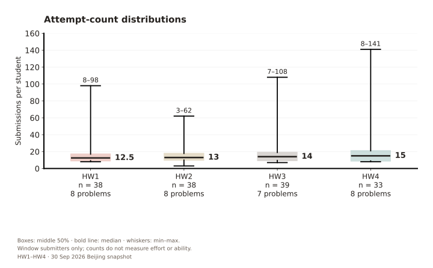


Accessible data table
| Homework | Problems | Submitters | Events | Min | Q1 | Median | Q3 | Max |
|---|---|---|---|---|---|---|---|---|
| HW1 | 8 | 38 | 673 | 8 | 9.25 | 12.5 | 17 | 98 |
| HW2 | 8 | 38 | 664 | 3 | 10 | 13 | 17.75 | 62 |
| HW3 | 7 | 39 | 764 | 7 | 9.5 | 14 | 19 | 108 |
| HW4 | 8 | 33 | 706 | 8 | 9 | 15 | 21 | 141 |
PROBLEM BOTTLENECKS
Which problems keep a gap after three attempts?
10 of 31 problem slots retain a mean gap above 10 percentage points after three attempts. HW3 26s3HW3-EvenOrOdd has the largest gap: 66.15 through three versus 100.00 best observed, a 33.85-point difference among the same 39 attempters. This suggests a question for reviewing feedback; it does not establish why the problem was difficult.
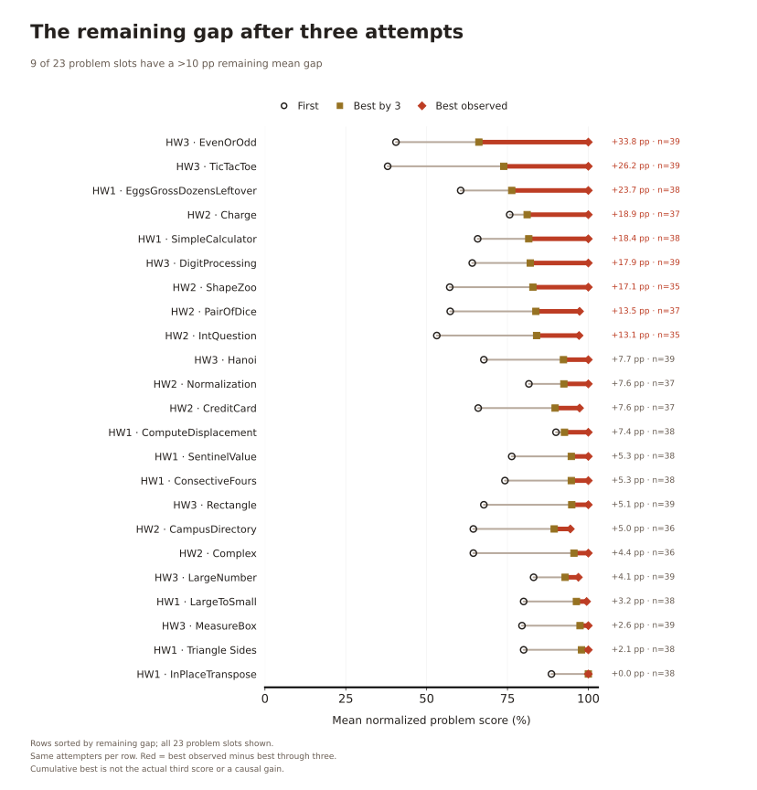


Accessible data table
| Homework | Problem | Name | Attempters | First | Best by 2 | Best by 3 | Best observed | Remaining gap (pp) |
|---|---|---|---|---|---|---|---|---|
| HW3 | P1 | 26s3HW3-EvenOrOdd | 39 | 40.51 | 48.97 | 66.15 | 100.00 | 33.85 |
| HW3 | P7 | TicTacToe | 39 | 37.95 | 60.51 | 73.85 | 100.00 | 26.15 |
| HW1 | P2 | Exercise2.5-EggsGrossDozensLeftover | 38 | 60.53 | 72.63 | 76.32 | 100.00 | 23.68 |
| HW2 | P4 | Charge | 37 | 75.68 | 78.38 | 81.08 | 100.00 | 18.92 |
| HW1 | P6 | Exercise3.3-SimpleCalculator | 38 | 65.79 | 73.68 | 81.58 | 100.00 | 18.42 |
| HW3 | P2 | 26s3HW3-DigitProcessing | 39 | 64.10 | 74.36 | 82.05 | 100.00 | 17.95 |
| HW2 | P8 | ShapeZoo | 35 | 57.14 | 71.43 | 82.86 | 100.00 | 17.14 |
| HW2 | P3 | PairOfDice | 37 | 57.30 | 78.92 | 83.78 | 97.30 | 13.51 |
| HW2 | P7 | IntQuestion | 35 | 53.14 | 81.14 | 84.00 | 97.14 | 13.14 |
| HW4 | P7 | Postfix | 33 | 53.33 | 75.15 | 87.88 | 100.00 | 12.12 |
| HW4 | P1 | Dominant | 33 | 67.88 | 81.82 | 90.30 | 100.00 | 9.70 |
| HW4 | P3 | ZeroMatrix | 33 | 63.64 | 88.48 | 91.52 | 100.00 | 8.48 |
| HW4 | P8 | Browser | 33 | 70.30 | 84.85 | 91.52 | 100.00 | 8.48 |
| HW4 | P4 | MinSubarray | 33 | 71.52 | 83.64 | 91.52 | 100.00 | 8.48 |
| HW3 | P3 | Hanoi | 39 | 67.69 | 89.74 | 92.31 | 100.00 | 7.69 |
| HW2 | P2 | CreditCard | 37 | 65.95 | 83.24 | 89.73 | 97.30 | 7.57 |
| HW2 | P1 | Normalization | 37 | 81.62 | 89.73 | 92.43 | 100.00 | 7.57 |
| HW1 | P1 | HW1-ComputeDisplacement | 38 | 90.00 | 92.63 | 92.63 | 100.00 | 7.37 |
| HW4 | P6 | Parentheses | 33 | 60.61 | 81.82 | 92.73 | 100.00 | 7.27 |
| HW1 | P7 | HW1-ConsectiveFours | 38 | 74.21 | 89.47 | 94.74 | 100.00 | 5.26 |
| HW1 | P5 | HW1-SentinelValue | 38 | 76.32 | 90.00 | 94.74 | 100.00 | 5.26 |
| HW3 | P5 | Rectangle | 39 | 67.69 | 90.26 | 94.87 | 100.00 | 5.13 |
| HW2 | P6 | CampusDirectory | 36 | 64.44 | 83.89 | 89.44 | 94.44 | 5.00 |
| HW2 | P5 | Complex | 36 | 64.44 | 89.44 | 95.56 | 100.00 | 4.44 |
| HW4 | P2 | Collapse | 33 | 73.94 | 90.91 | 95.76 | 100.00 | 4.24 |
| HW4 | P5 | ArrayStack | 33 | 78.18 | 90.30 | 95.76 | 100.00 | 4.24 |
| HW3 | P6 | LargeNumber | 39 | 83.08 | 90.26 | 92.82 | 96.92 | 4.10 |
| HW1 | P3 | HW1-LargeToSmall | 38 | 80.00 | 94.21 | 96.32 | 99.47 | 3.16 |
| HW3 | P4 | MeasureBox | 39 | 79.49 | 94.87 | 97.44 | 100.00 | 2.56 |
| HW1 | P4 | Exercise1.2.15 Triangle Sides | 38 | 80.00 | 93.68 | 97.89 | 100.00 | 2.11 |
| HW1 | P8 | Exercise1.4.15-InPlaceTranspose | 38 | 88.60 | 97.37 | 100.00 | 100.00 | 0.00 |
MEAN SCORE BY ATTEMPT
What does each successive submission actually score?
HW1's actual mean falls from 76.93 on attempt 1 to 64.53 on attempt 2. Event counts change from 304 to 106; distinct students from 38 to 34. Only pairs reaching a later attempt contribute to that point. A lower mean does not mean the same group got worse. HW1–HW4 have separate panels.
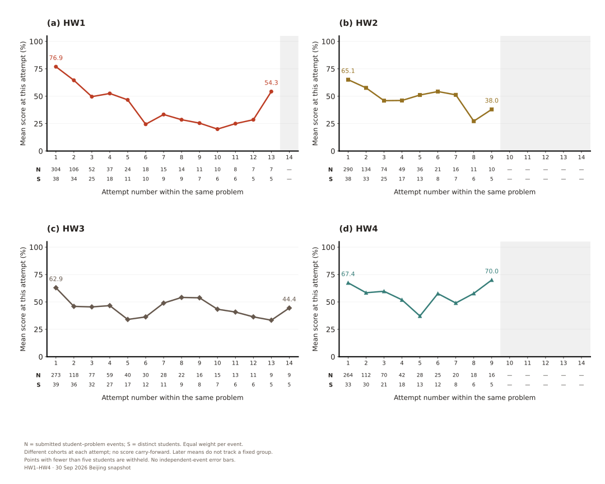


Accessible data table
| Homework | Attempt | Mean actual score (%) | Events (N) | Students (S) |
|---|---|---|---|---|
| HW1 | 1 | 76.93 | 304 | 38 |
| HW1 | 2 | 64.53 | 106 | 34 |
| HW1 | 3 | 49.62 | 52 | 25 |
| HW1 | 4 | 52.52 | 37 | 18 |
| HW1 | 5 | 46.67 | 24 | 11 |
| HW1 | 6 | 24.44 | 18 | 10 |
| HW1 | 7 | 33.33 | 15 | 9 |
| HW1 | 8 | 28.57 | 14 | 9 |
| HW1 | 9 | 25.45 | 11 | 7 |
| HW1 | 10 | 20.00 | 10 | 6 |
| HW1 | 11 | 25.00 | 8 | 6 |
| HW1 | 12 | 28.57 | 7 | 5 |
| HW1 | 13 | 54.29 | 7 | 5 |
| HW2 | 1 | 65.10 | 290 | 38 |
| HW2 | 2 | 57.61 | 134 | 33 |
| HW2 | 3 | 45.95 | 74 | 25 |
| HW2 | 4 | 46.12 | 49 | 17 |
| HW2 | 5 | 51.11 | 36 | 13 |
| HW2 | 6 | 54.29 | 21 | 8 |
| HW2 | 7 | 51.25 | 16 | 7 |
| HW2 | 8 | 27.27 | 11 | 6 |
| HW2 | 9 | 38.00 | 10 | 5 |
| HW3 | 1 | 62.93 | 273 | 39 |
| HW3 | 2 | 45.93 | 118 | 36 |
| HW3 | 3 | 45.45 | 77 | 32 |
| HW3 | 4 | 46.61 | 59 | 27 |
| HW3 | 5 | 34.00 | 40 | 17 |
| HW3 | 6 | 36.33 | 30 | 12 |
| HW3 | 7 | 48.93 | 28 | 11 |
| HW3 | 8 | 54.09 | 22 | 9 |
| HW3 | 9 | 53.75 | 16 | 8 |
| HW3 | 10 | 43.33 | 15 | 7 |
| HW3 | 11 | 40.77 | 13 | 6 |
| HW3 | 12 | 36.36 | 11 | 6 |
| HW3 | 13 | 33.33 | 9 | 5 |
| HW3 | 14 | 44.44 | 9 | 5 |
| HW4 | 1 | 67.42 | 264 | 33 |
| HW4 | 2 | 58.39 | 112 | 30 |
| HW4 | 3 | 59.71 | 70 | 21 |
| HW4 | 4 | 51.90 | 42 | 18 |
| HW4 | 5 | 37.14 | 28 | 13 |
| HW4 | 6 | 57.60 | 25 | 12 |
| HW4 | 7 | 49.00 | 20 | 8 |
| HW4 | 8 | 57.78 | 18 | 6 |
| HW4 | 9 | 70.00 | 16 | 5 |
PRODUCTIVE RETRIES
Does the next attempt set a new personal best?
Among eligible retries: HW1 32.3% (95/294); HW2 45.0% (125/278); HW3 34.6% (119/344); HW4 42.2% (129/306). These are event rates; students can contribute multiple retries.
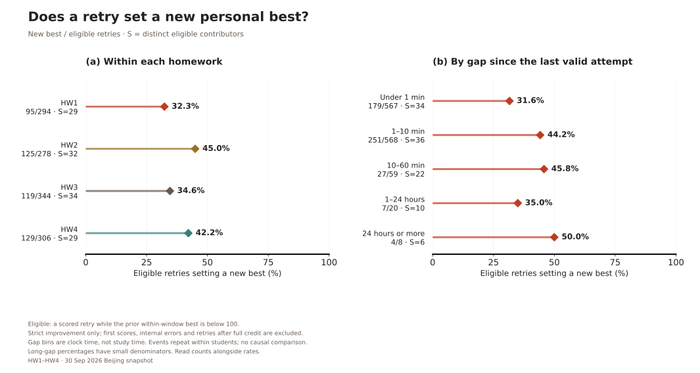


Accessible data table
| Homework | Status | New bests | Eligible retries | Students (S) | Rate (%) |
|---|---|---|---|---|---|
| HW1 | visible | 95 | 294 | 29 | 32.31 |
| HW2 | visible | 125 | 278 | 32 | 44.96 |
| HW3 | visible | 119 | 344 | 34 | 34.59 |
| HW4 | visible | 129 | 306 | 29 | 42.16 |
Accessible data table · retry gaps
| Gap | Status | New bests | Eligible retries | Students (S) | Rate (%) |
|---|---|---|---|---|---|
| Under 1 min | visible | 179 | 567 | 34 | 31.57 |
| 1–10 min | visible | 251 | 568 | 36 | 44.19 |
| 10–60 min | visible | 27 | 59 | 22 | 45.76 |
| 1–24 hours | visible | 7 | 20 | 10 | 35.00 |
| 24 hours or more | visible | 4 | 8 | 6 | 50.00 |
Accessible data table · individual problem slots
| Homework | Problem | Status | New bests | Eligible retries | Students (S) | Rate (%) |
|---|---|---|---|---|---|---|
| HW1 | HW1-ConsectiveFours | visible | 10 | 22 | 10 | 45.45 |
| HW1 | HW1-SentinelValue | visible | 13 | 32 | 11 | 40.62 |
| HW1 | HW1-ComputeDisplacement | suppressed | — | — | — | — |
| HW1 | HW1-LargeToSmall | visible | 16 | 36 | 14 | 44.44 |
| HW1 | Exercise1.2.15 Triangle Sides | visible | 13 | 16 | 9 | 81.25 |
| HW1 | Exercise1.4.15-InPlaceTranspose | suppressed | — | — | — | — |
| HW1 | Exercise2.5-EggsGrossDozensLeftover | visible | 18 | 93 | 16 | 19.35 |
| HW1 | Exercise3.3-SimpleCalculator | visible | 15 | 78 | 13 | 19.23 |
| HW2 | Normalization | visible | 11 | 19 | 9 | 57.89 |
| HW2 | CreditCard | visible | 16 | 31 | 12 | 51.61 |
| HW2 | PairOfDice | visible | 23 | 55 | 19 | 41.82 |
| HW2 | Charge | visible | 9 | 45 | 9 | 20.00 |
| HW2 | Complex | visible | 20 | 28 | 15 | 71.43 |
| HW2 | CampusDirectory | visible | 12 | 23 | 13 | 52.17 |
| HW2 | IntQuestion | visible | 19 | 35 | 18 | 54.29 |
| HW2 | ShapeZoo | visible | 15 | 42 | 15 | 35.71 |
| HW3 | 26s3HW3-EvenOrOdd | visible | 30 | 130 | 25 | 23.08 |
| HW3 | 26s3HW3-DigitProcessing | visible | 14 | 63 | 14 | 22.22 |
| HW3 | Hanoi | visible | 13 | 27 | 13 | 48.15 |
| HW3 | MeasureBox | visible | 8 | 12 | 8 | 66.67 |
| HW3 | LargeNumber | visible | 9 | 20 | 6 | 45.00 |
| HW3 | TicTacToe | visible | 31 | 71 | 25 | 43.66 |
| HW3 | Rectangle | visible | 14 | 21 | 13 | 66.67 |
| HW4 | Dominant | visible | 17 | 28 | 12 | 60.71 |
| HW4 | Collapse | visible | 13 | 28 | 9 | 46.43 |
| HW4 | ZeroMatrix | visible | 15 | 39 | 13 | 38.46 |
| HW4 | MinSubarray | visible | 18 | 45 | 14 | 40.00 |
| HW4 | ArrayStack | visible | 10 | 20 | 8 | 50.00 |
| HW4 | Parentheses | visible | 19 | 53 | 16 | 35.85 |
| HW4 | Postfix | visible | 17 | 33 | 16 | 51.52 |
| HW4 | Browser | visible | 20 | 60 | 11 | 33.33 |
PROGRESS / DEADLINE PHASE
When does a retry make progress?
Each window is split into five equal-duration phases. Color shows the share of eligible retries setting a new best; each cell reports new-best counts, eligible retries and distinct contributors. Different phases can contain different students, problems and prior scores.
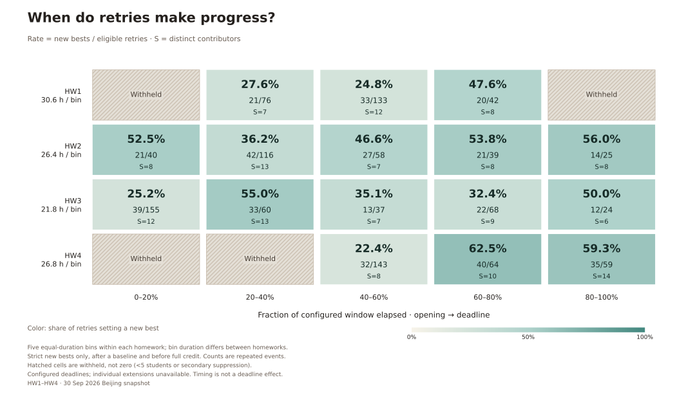


Accessible data table
| Homework | Window elapsed | Hours per phase | Status | New bests | Eligible retries | Students (S) | Rate (%) |
|---|---|---|---|---|---|---|---|
| HW1 | 0–20% | 30.60 | suppressed | — | — | — | — |
| HW1 | 20–40% | 30.60 | visible | 21 | 76 | 7 | 27.63 |
| HW1 | 40–60% | 30.60 | visible | 33 | 133 | 12 | 24.81 |
| HW1 | 60–80% | 30.60 | visible | 20 | 42 | 8 | 47.62 |
| HW1 | 80–100% | 30.60 | suppressed | — | — | — | — |
| HW2 | 0–20% | 26.40 | visible | 21 | 40 | 8 | 52.50 |
| HW2 | 20–40% | 26.40 | visible | 42 | 116 | 13 | 36.21 |
| HW2 | 40–60% | 26.40 | visible | 27 | 58 | 7 | 46.55 |
| HW2 | 60–80% | 26.40 | visible | 21 | 39 | 8 | 53.85 |
| HW2 | 80–100% | 26.40 | visible | 14 | 25 | 8 | 56.00 |
| HW3 | 0–20% | 21.80 | visible | 39 | 155 | 12 | 25.16 |
| HW3 | 20–40% | 21.80 | visible | 33 | 60 | 13 | 55.00 |
| HW3 | 40–60% | 21.80 | visible | 13 | 37 | 7 | 35.14 |
| HW3 | 60–80% | 21.80 | visible | 22 | 68 | 9 | 32.35 |
| HW3 | 80–100% | 21.80 | visible | 12 | 24 | 6 | 50.00 |
| HW4 | 0–20% | 26.80 | suppressed | — | — | — | — |
| HW4 | 20–40% | 26.80 | suppressed | — | — | — | — |
| HW4 | 40–60% | 26.80 | visible | 32 | 143 | 8 | 22.38 |
| HW4 | 60–80% | 26.80 | visible | 40 | 64 | 10 | 62.50 |
| HW4 | 80–100% | 26.80 | visible | 35 | 59 | 14 | 59.32 |
MIDTERM / AVAILABLE SCORES
A wider spread behind near-perfect homework.
The available midterm scores have a mean of 90.02 and median of 93.25. Canvas lists a nominal maximum of 100; values above 100 are preserved as raw points. No grade is capped or inferred.
26 matched students from a 41-member eligible roster; 15 grades were not in the supplied excerpt. This is a partial, non-random cohort, not the class grade distribution.
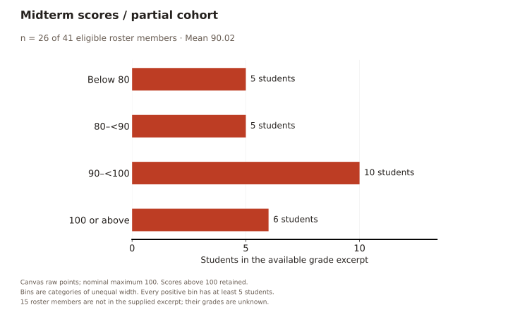


Accessible data table · midterm distribution
| Raw midterm points | Students |
|---|---|
| Below 80 | 5 |
| 80–<90 | 5 |
| 90–<100 | 10 |
| 100 or above | 6 |
HOMEWORK PROCESS / EXAM OUTCOME
Test the association from several angles.
In this excerpt, final-day submission share has the clearest negative rank association with exam scores (ρ = -0.48). Its leave-one-out correlations range from -0.60 to -0.42, while the all-23-problem and discrepancy-excluded subsets give -0.43 and -0.47. All three leave-one-out ranges retain their original signs, yet the submission-count and mean-first-score bootstrap intervals cross zero. Stability to one-record deletion does not imply a precise estimate. These checks do not remove selection bias or confounding.
All selected homework windows end before the user-confirmed exam start.
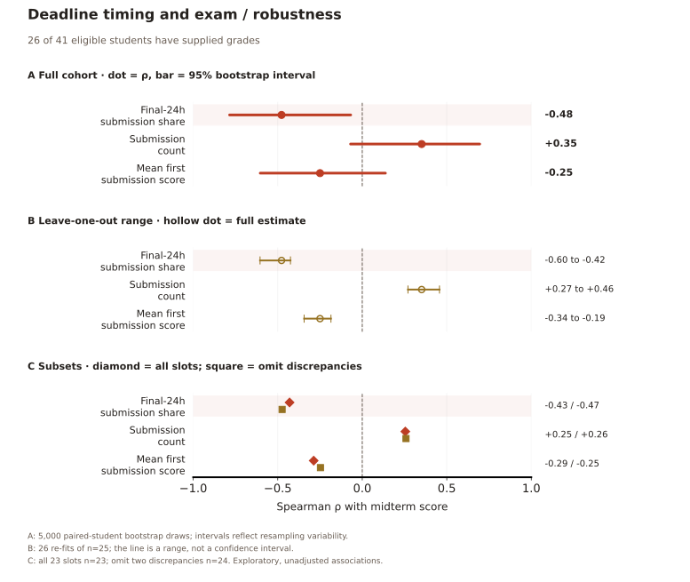


Accessible data table · associations and sensitivity
| Behavior | N | Spearman ρ | 95% bootstrap interval | Leave-one-out range |
|---|---|---|---|---|
| Submission count | 26 | +0.351 | -0.069 to +0.695 | +0.270 to +0.457 |
| Mean first-submission score | 26 | -0.250 | -0.603 to +0.137 | -0.344 to -0.185 |
| Share submitted in final 24 hours | 26 | -0.477 | -0.785 to -0.068 | -0.605 to -0.425 |
| Behavior | All matched | All 23 problem slots attempted | Without homework discrepancies |
|---|---|---|---|
| Submission count | +0.351 (n=26) | +0.255 (n=23) | +0.259 (n=24) |
| Mean first-submission score | -0.250 (n=26) | -0.287 (n=23) | -0.247 (n=24) |
| Share submitted in final 24 hours | -0.477 (n=26) | -0.430 (n=23) | -0.474 (n=24) |
What the three behaviors mean
- Submission count: all submissions inside each configured HW1–HW3 window, including attempts after acceptance.
- Mean first-submission score: first normalized score per attempted assignment–problem slot, then the mean within each student. Unattempted slots are not imputed as zero. Coverage varies, so a separate all-23-slots sensitivity check is shown.
- Final-24h share: the percentage of a student's in-window submissions made in the final 24 hours before that homework's configured deadline. It does not measure time spent studying or account for individual extensions.
A first submission can follow off-platform work, and students may submit drafts at different stages. More submissions do not necessarily mean more effort; lower initial scores do not establish lower prior ability. The signs here are exploratory and can reflect cohort selection, problem coverage and different submission practices.
SUBMISSION GROUPS / SCORE DISPERSION
The groups overlap. Counts are not a target.
Group means are 81.00, 95.27 and 93.92 for under 35, 35–59 and 60 or more submissions. The middle group has the highest mean, while the highest-count group has the highest median. A single summary cannot establish that additional attempts improve an exam score.
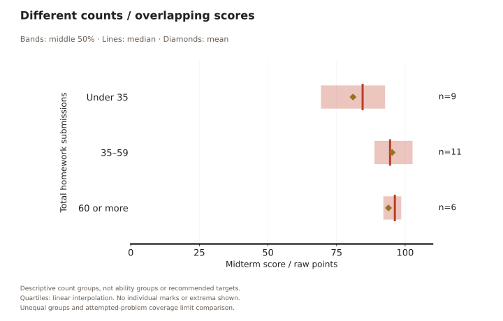


Accessible data table · grouped scores
| Homework submissions | N | Mean exam | Q1 | Median | Q3 |
|---|---|---|---|---|---|
| Under 35 | 9 | 81.0 | 69.5 | 84.5 | 92.5 |
| 35–59 | 11 | 95.27 | 89.0 | 94.5 | 102.5 |
| 60 or more | 6 | 93.92 | 92.25 | 96.25 | 98.38 |
COURSE PULSE / OBSERVATION COVERAGE
A second window. Not the whole learning process.
All 26 available grade records have a unique normalized-name match to a Course Pulse student account. Of those, 11 have recorded pre-exam platform activity, including nine with resource-open events. The other 15 have no observed activity in this tracking window; this does not establish that they did not study.
Personal tracking began on 8 September at 13:49 Beijing time. Main analysis ends on 16 September at 08:00, four hours before the exam, because metrics are aggregated by UTC day. OJ metrics span all three configured homework windows, so the sources cover different periods.
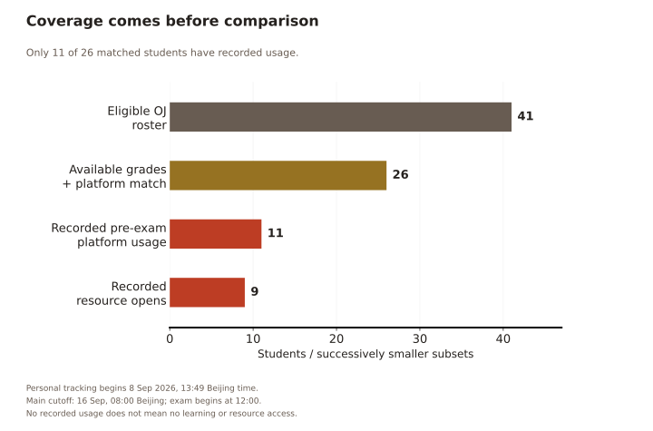


Accessible data table · coverage
| Subset | Students |
|---|---|
| Eligible OJ roster | 41 |
| Available grades matched to Course Pulse | 26 |
| Of those: recorded pre-exam platform usage | 11 |
| Of those: recorded resource opens | 9 |
PLATFORM RECORDS / EXAM OUTCOMES
A difference to investigate. Not an effect to advertise.
The 11 students with recorded activity average 95.27 points, compared with 86.17 among the 15 without a record. Their medians are 94.5 and 87.5. A 9.11-point difference between self-selected groups is not an estimate of what the platform caused.
Any positive recorded metric qualifies, including a brief visit. Students can download materials and study offline, use other tools, or differ in prior knowledge and motivation. These factors are not controlled here.
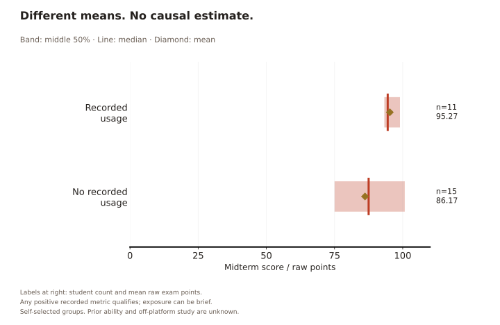


Accessible data table · platform groups
| Observed platform usage | N | Mean | Q1 | Median | Q3 |
|---|---|---|---|---|---|
| Recorded usage | 11 | 95.27 | 93.25 | 94.5 | 99.0 |
| No recorded usage | 15 | 86.17 | 75.0 | 87.5 | 100.75 |
OJ + COURSE PULSE / SYNTHESIS
Timing stands out. Usage remains uncertain.
Final-day OJ submission share remains negatively associated with exam scores. Platform active time, recorded days and resource opens each show positive rank associations, but all three platform intervals cross zero. These measures do not yet establish a reliable usage–achievement relationship.
Active time estimates foreground interaction, with an idle limit; it does not measure attention or total study time. Missing platform events are represented as zero recorded events only within the instrumented window. No claim is made about activity before tracking began.
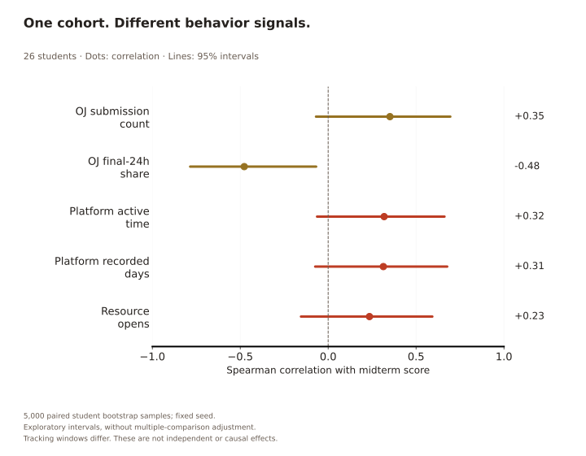


Accessible tables · correlations and cutoff sensitivity
| Behavior | N | Spearman ρ | 95% bootstrap interval |
|---|---|---|---|
| Submission count | 26 | +0.351 | -0.069 to +0.695 |
| Share submitted in final 24 hours | 26 | -0.477 | -0.785 to -0.068 |
| Platform active time | 26 | +0.318 | -0.063 to +0.662 |
| Platform recorded days | 26 | +0.314 | -0.074 to +0.677 |
| Resource opens | 26 | +0.235 | -0.155 to +0.592 |
| Platform metric | Main cutoff | Plus verified exam-morning cells |
|---|---|---|
| Platform active time | +0.318 | +0.318 |
| Platform recorded days | +0.314 | +0.314 |
| Resource opens | +0.235 | +0.235 |
What the combined evidence supports
Similar homework endpoints can conceal different submission schedules and resource-use patterns. In this partial cohort, concentrated final-day submissions accompany lower exam scores, while recorded platform users have higher average scores. Platform intensity remains uncertain, and prior ability, motivation and off-platform study could explain these patterns.
Why AI and practice effectiveness are not plotted
The export includes assistant replies, staff activity and messages that cannot be linked to current accounts. Linked student messages are concentrated on one date, and overlap with the available grade cohort is too small for a useful public comparison. Practice records are current draft snapshots, with no submitted outcomes; they cannot reconstruct edits, completed exercises or learning gains. These sources need further validation before effectiveness claims.
The next useful evidence is the remaining grades and a longer, consistently instrumented observation period. More variables alone will not resolve cohort selection or confounding.
Only real recorded usage is included; editable reported totals, demo accounts and staff activity are excluded. Raw CSVs, names, account IDs, messages and code remain outside the public repository. Public groups have at least five students; this reduces disclosure but is not a formal anonymity guarantee.
Download platform aggregate JSON · Sources, definitions and reproduction ↗
DATASET & PROCESSING
From private logs to reproducible summaries.
HW1–HW4 · 30 Sep 2026 Beijing snapshot. The read-only export contains nine source tables. A previously confirmed test account was matched privately and excluded locally; the analysis contains 42 roster members and 3,070 course events. The original export remains unchanged. This is a snapshot, and the website has no production connection.
The four homeworks contain 2,900 events; their configured windows retain 2,807 from 39 students and exclude 93 outside-window events. Zero-submitters remain in the roster count.
Unique keys, roster membership, assignment–problem links, finite scores and positive maxima are validated before aggregation.
UTC is converted to Asia/Shanghai. Normalized score is 100 × assignment_submission_score / problem_max_points.
Events are ordered by timestamp then submission ID. Raw scores on different point scales are never pooled.
For the two event-progress charts, 1,131 first valid scores set baselines, 13 internal-error judgements are skipped, and 441 attempts after full credit are ineligible. Other completed attempts are checked against the earlier running best. The four descriptive homework figures retain all recorded in-window attempts, including internal-error and post-acceptance events.
| Homework | Opens (Beijing) | Configured deadline (Beijing) | Excluded outside window |
|---|---|---|---|
| HW1 | 2026-08-26 15:00 | 2026-09-01 23:59 | 14 |
| HW2 | 2026-09-03 12:00 | 2026-09-08 23:59 | 35 |
| HW3 | 2026-09-11 11:00 | 2026-09-15 23:59 | 44 |
| HW4 | 2026-09-24 10:00 | 2026-09-29 23:59 | 0 |
The public aggregate JSON contains no student identifiers or event-level records. Positive bins require at least five distinct contributors; event partitions use secondary masking when needed to avoid a lone recoverable small cell. Raw logs, private pseudonyms, scores and linkage keys stay outside this repository. Suppression reduces disclosure; it is not a formal anonymity guarantee.
HW4 is after the 16 September exam. The midterm and Course Pulse inputs retain their pre-exam HW1–HW3 evidence and 26 supplied grades from 41 eligible members. The current 42-member homework cohort is a later roster snapshot, not a relabeling of that exam cohort.
EVALUATION PLAN · NOT YET CONDUCTED
Can readers interpret the evidence correctly?
A 15–20 minute formative study with approximately five classmates or teaching assistants. We will test the selected layout and revise the specific places where readers struggle.
Who & how
Aim for three classmates and two TAs, after a separate pilot. Include desktop and mobile sessions. Allow up to 90 seconds per information task; collect explanations afterward. Participation is voluntary, and no grades or names are collected.
What we measure
Answer accuracy, completion time, assistance, confidence and recurring misunderstandings. Record successful, partial, failed and timed-out attempts separately; use anonymous participant codes.
| Task | Reader action | Evidence of understanding |
|---|---|---|
| Timing | Find the largest visible time cell and read both panels. | Correct time, submission count and distinct people. |
| Retries | Compare the four medians and observed ranges. | Correct homework, median and min–max interpretation. |
| Score progression | Find the largest mean gap remaining after three attempts. | Correct problem, best-through-three value and remaining percentage-point gap. |
| Actual attempt scores | Explain HW1's first-to-second mean change using N/S. | Recognizes a changing cohort; does not infer individual decline. |
| Productive retries | Read HW4’s new-best rate and denominator. | 129/306 = 42.2%; events, not independent students. |
| Deadline phases | Interpret HW4’s 60–80% phase and a hatched cell. | 40/64 = 62.5%, S=10; equal-duration window phases, with masked cells distinct from zero. |
| Midterm coverage | Identify the matched cohort and the unavailable grades. | 26 of 41 eligible members; 15 not in the excerpt, not zero scores. |
| Associations | Explain the final-day association and the horizontal intervals. | Negative rank association; bootstrap uncertainty does not establish causation. |
| Grouped exam scores | Compare means, medians and middle-50% bands. | Distinguishes score dispersion from confidence intervals and avoids recommending a submission target. |
| Platform coverage | Explain the 41 → 26 → 11 → 9 subsets and observation window. | Recognizes missing grades, late tracking and no-record ambiguity. |
| Platform groups | Interpret the 9.11-point mean difference. | Does not attribute the gap to a platform effect; distinguishes dispersion from uncertainty. |
| Combined evidence | Read a platform interval and compare it with the OJ timing interval. | Recognizes zero crossing, differing windows and unmeasured confounding. |
Check misconceptions
Ask whether masked cells mean zero and whether submission gaps measure study time. Also check if readers mistake repeated attempts for causal learning gains. Ask them to find the score formula and download a PDF.
Decide what to revise
Revise when fewer than four of five readers fully solve a task, two repeat the same misconception, or anyone encounters a blocked keyboard/mobile operation. These are formative triggers, not statistical evidence of effectiveness.
Motion and navigation: also test switching scenes and returning, opening a large figure, and disabling motion. Record accidental navigation, lost reading position, comfort and whether transitions are mistaken for changes in the data. These checks are planned; no participant evaluation has been conducted.
Scoring, reporting & retest procedure
Score each information task 0–2 with a predefined answer key. Report counts, assistance and timeouts; summarize successful-task times with their denominator. Retest revisions with fresh participants when feasible, or acknowledge practice effects. Five volunteers support finding usability problems, not population-level or causal claims.
Full protocol and facilitator answer key · Blank observation sheet
INTERPRETATION / NEXT STEPS
A recorded gain is not a causal effect.
Retry productivity and deadline phases are now computed from ordered events. Further comparisons by prior score, verdict or problem mix would require fresh privacy checks. Any uncertainty estimate must account for repeated observations within students. No independent-event confidence intervals, study-time estimates or causal learning claims are made. Analytical filters and the reader evaluation remain planned.
MIDTERM / SOURCES & LIMITS
Linked privately. Reported in aggregate.
26 matched students from a 41-member eligible roster; 15 grades were not in the supplied excerpt. This is a partial, non-random cohort, not the class grade distribution. The available grades were transcribed from the user-provided Canvas excerpt and joined to unique same-name OJ course members, with homework scores cross-checked. Two homework discrepancies remain flagged; neither Canvas nor OJ values were altered. Excluding these two records leaves 24 students, as shown in the sensitivity table.
The OJ behavior extract was queried read-only on 21 September 2026. A named test account is excluded from this extension, leaving 41 eligible roster members. The six homework-process figures now use the separate 30 September snapshot, including post-exam HW4 and a later 42-member roster after test-account exclusion. The midterm figures keep their pre-exam HW1–HW3 metrics: 2,101 in-window submissions from 39 submitters; the 26 matched students contribute 1,507 of them.
All selected homework windows end before the user-confirmed exam start. The user confirmed the exam began on 16 September 2026 at 12:00 Beijing time.
Individual grades, names, OJ identifiers and source linkage files stay outside the repository. The downloadable midterm aggregate JSON contains only cohort summaries. Groups have at least five students; this is disclosure reduction, not a formal anonymity guarantee. The remaining grades are needed before a complete cohort analysis; a prediction study would additionally need independent validation.